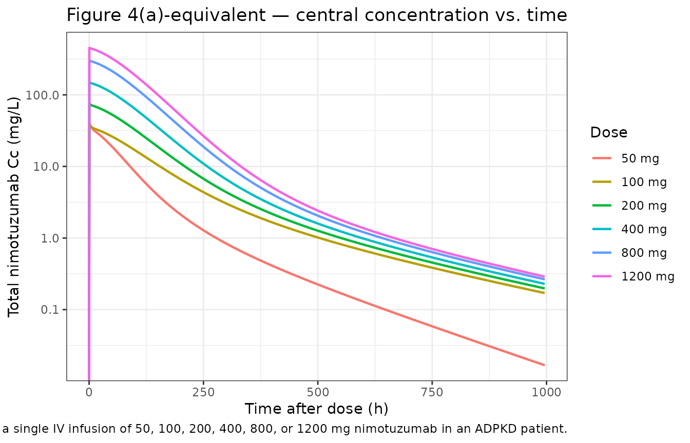
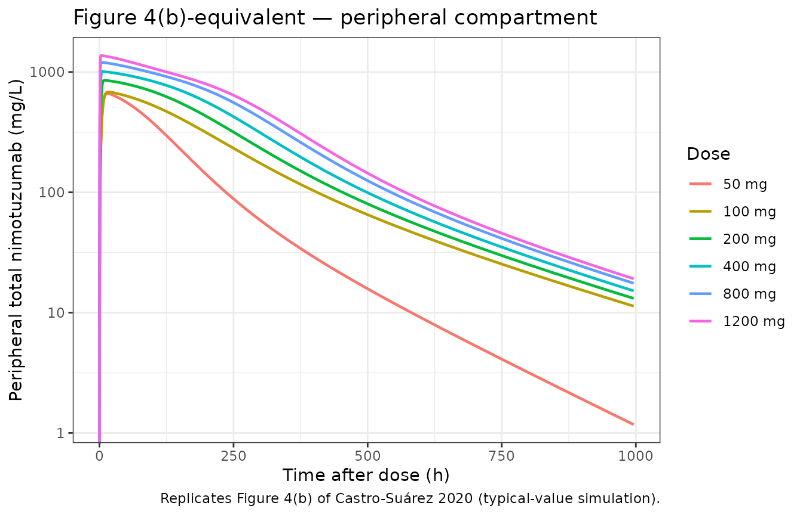
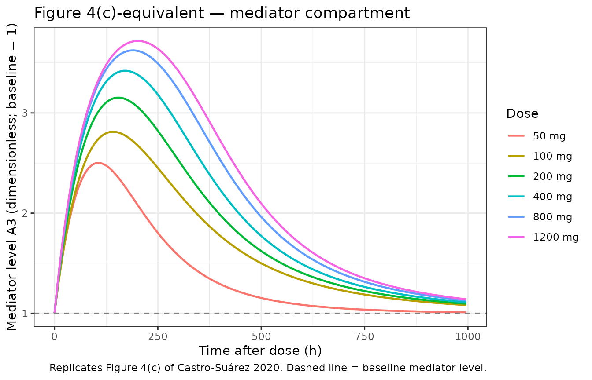
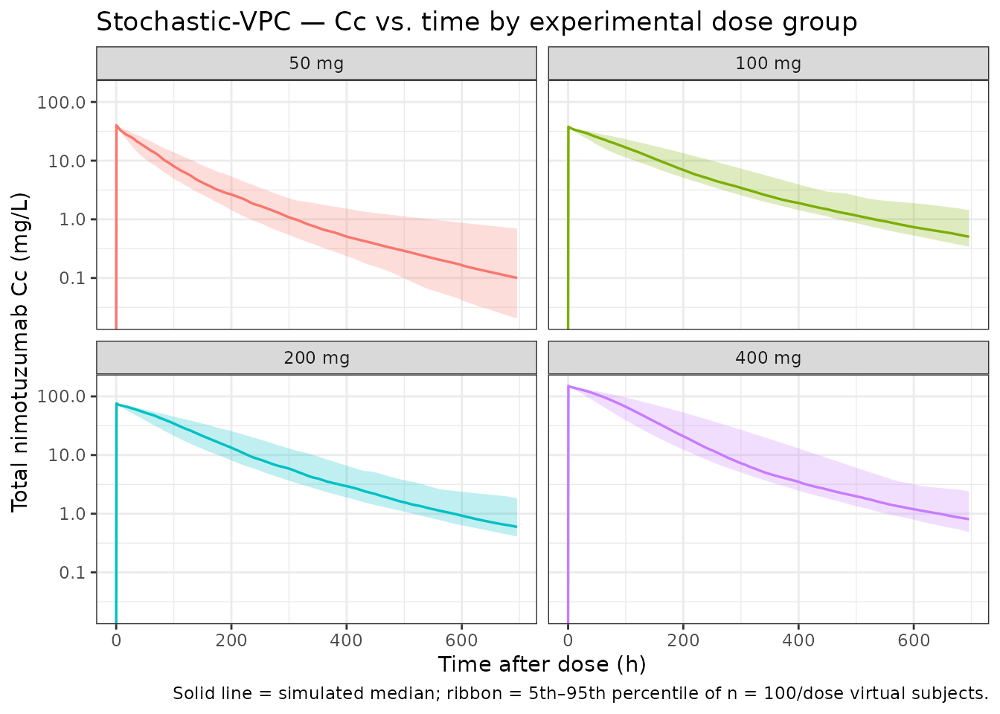

Castro-Surez_2020_nimotuzumab
Source:vignettes/articles/Castro-Surez_2020_nimotuzumab.Rmd
Castro-Surez_2020_nimotuzumab.Rmd
library(nlmixr2lib)
library(rxode2)
#> rxode2 5.0.2 using 2 threads (see ?getRxThreads)
#> no cache: create with `rxCreateCache()`
library(PKNCA)
#>
#> Attaching package: 'PKNCA'
#> The following object is masked from 'package:stats':
#>
#> filter
library(dplyr)
#>
#> Attaching package: 'dplyr'
#> The following objects are masked from 'package:stats':
#>
#> filter, lag
#> The following objects are masked from 'package:base':
#>
#> intersect, setdiff, setequal, union
library(tidyr)
library(ggplot2)Nimotuzumab semi-mechanistic QSS TMDD population PK model (Castro-Suárez 2020)
de Castro-Suárez et al. (2020) developed a semi-mechanistic two-compartment population pharmacokinetic model for nimotuzumab (a humanized IgG1 monoclonal antibody against EGFR, with an intermediate affinity Kd ≈ 2.1 × 10⁻⁸ M) in 20 adults with autosomal dominant polycystic kidney disease (ADPKD) following a single 30-min intravenous infusion at one of four fixed dose levels (50, 100, 200, or 400 mg, n = 5 per cohort). The non-linear PK is described by a quasi-steady-state target-mediated drug disposition (QSS TMDD) framework with EGFR binding represented in both central (Rtot) and peripheral (Rtotp) compartments and a turnover mediator that stimulates non-specific clearance via a sigmoid Emax of free central nimotuzumab. Covariates were not retained in the final model.
This vignette documents the parameter provenance, replicates the typical PK profiles shown in Figure 4 of the paper across the experimental and extrapolated dose range (50–1200 mg), and runs PKNCA on a virtual cohort to provide dose-stratified Cmax / AUC / half-life summaries.
Population studied
Castro-Suárez 2020 Table 1 (single-center Cuban phase I trial, n = 20):
| Field | Value |
|---|---|
| N subjects | 20 |
| N observations | 422 (all quantifiable; none below LOQ) |
| N studies | 1 (single-center, open-label, dose-escalation phase I) |
| Age | median 42 y (mean 39, SD 11) |
| Body weight | median 65.7 kg (mean 66.98, SD 14.69) |
| Height | median 163.5 cm (mean 163.60, SD 8.99) |
| Body surface area | median 1.70 m² (mean 1.72, SD 0.21) |
| Serum creatinine | median 0.72 mg/dL (mean 0.77, SD 0.14) |
| Creatinine clearance | median 105.7 mL/min/1.73 m² (mean 103.43, SD 22.63) |
| TKV (men, women) | mean 822 mL / 924 mL |
| TCV | mean 340 mL |
| Sex | 14 F / 6 M (70% female) |
| Race / ethnicity | 75% Caucasian, 5% Afro-American, 20% Other |
| Disease state | Autosomal dominant polycystic kidney disease (ADPKD) |
| Inclusion threshold | GFR ≥ 50 mL/min/1.73 m²; urinary protein < 1 g/24 h |
| Dose levels | 50, 100, 200, 400 mg single IV infusion (30 min, n = 5/cohort) |
Body weight, height, age, BSA, CrCL, serum creatinine, total kidney volume (TKV), total cyst volume (TCV), sex, and race were all tested as covariates in a stepwise covariate-search procedure (forward p < 0.05, backward p < 0.01); none was retained as statistically significant on any PK parameter.
Programmatically:
readModelDb("Castro-Surez_2020_nimotuzumab") carries the
same metadata in the meta$population field of the returned
rxode2 UI object (or via the model’s
population element when the model function is called
directly).
Source trace
Every numeric value in
inst/modeldb/specificDrugs/Castro-Surez_2020_nimotuzumab.R
comes from the following locations in de Castro-Suárez N, Trame MN,
Mangas-Sanjuan V, et al., Pharmaceutics 2020;12(12):1147 (doi:10.3390/pharmaceutics12121147).
No errata were located on PubMed, the MDPI landing page, or Google
Scholar (search dates 2026-04-25).
| Quantity | Source location | Value used |
|---|---|---|
| 2-compartment QSS TMDD with mediator turnover | Methods §2.3 / Figure 1 | Eqs. (1)–(3) |
| Linear CL (modulated by mediator) | Table 2, CL row (final model) | 9.64 × 10⁻³ L/h |
| Central volume V1 | Table 2, V1 row (final model) | 2.63 L |
| Inter-compartmental clearance Q | Table 2, Q row (final model) | 2.88 × 10⁻² L/h |
| Peripheral volume V2 | Table 2, V2 row (final model) | 9.92 × 10⁻³ L |
| Kss (QSS binding constant; shared in both compartments) | Table 2, Kss row (final model) | 15.5 mg/L |
| kint (internalization of nimotuzumab–EGFR complex) | Table 2, kint row (final model) | 4.94 × 10⁻³ /h |
| Rtot (apparent EGFR in central compartment) | Table 2, Rtot row (final model) | 1.05 × 10⁻² mg/L |
| Rtotp (apparent EGFR in peripheral compartment) | Table 2, Rtotp row (final model) | 956 mg/L |
| Kout (mediator first-order elimination) | Table 2, Kout row (final model) | 1.33 × 10⁻² /h |
| Kin (mediator zero-order synthesis) | Methods §2.3 (initial conditions) | kin = kout × A3(0) = kout |
| Smax (maximal stimulation of non-specific CL) | Table 2, Smax row (final model) | 3.18 |
| S50 (free C achieving half-Smax) | Table 2, S50 row (final model) | 8.57 mg/L |
| γ (Hill coefficient on sigmoid; fixed at 1) | Eq. (3) of Methods §2.3 (operator decision) | 1 (see Assumptions) |
| IIV on Rtotp | Table 2, IIV row (final model; η-shrink. 14%) | 135% CV |
| IIV on Kout | Table 2, IIV row (final model; η-shrink. 21%) | 197% CV |
| Residual error (additive on log scale = proportional) | Table 2, residual row (final model; ε-shrink. 4%) | 48% |
| Vss = V1 + V2 (typical) | Table 2 footnote / Discussion §4 | 2.64 L |
| V1 change (D = 50 mg) [%] = 53 (applied as 53 % decrease in V1 for 50 mg cohort — see Errata) | Table 2, “V1 change (D = 50 mg)” row | V1 * (1 − 0.53 * (DOSE == 50)) |
The ODE system implemented in
inst/modeldb/specificDrugs/Castro-Surez_2020_nimotuzumab.R
is mathematically equivalent to the paper’s Eqs. (1)–(3): the model file
tracks total drug amount and uses the closed-form QSS algebraic solution
cfree = ½·((C_total − R − Kss) + √((C_total − R − Kss)² + 4·Kss·C_total))
(Gibiansky et al. 2008) for the free concentration in each compartment.
The paper’s published form (A1 as free amount with the
dilution factor (1 + R·Kss/(Kss + A1/V)²) in the
denominator) and the implemented form (total amount with implicit
free-conc solution) yield identical observable total nimotuzumab
concentrations because the dilution factor is exactly
d(C_total)/d(C_free) under QSS.
Virtual cohort
The Castro-Suárez trial enrolled n = 5 patients per dose cohort; for
a stable PKNCA validation we simulate a larger virtual ADPKD cohort (n =
100 per dose level) drawing body weight from a log-normal distribution
anchored on the published median weight (65.7 kg, SD 14.69 kg → CV ≈
22%) and clipped to a clinically plausible adult range. Body weight
enters the model only via the population metadata (the
final model carries no allometric covariate effect), so weight
variability does not propagate into Cc; it is included only for realism
in the cohort summary. Inter-individual variability flows from the two
random effects retained in the final model, η on Rtotp (135%
CV) and η on Kout (197% CV).
set.seed(20201201)
n_per_dose <- 100
dose_levels <- c(50, 100, 200, 400, 800, 1200)
make_cohort <- function(dose_mg, n, id_offset = 0L) {
# Body weight: log-normal, median 65.7 kg, CV 22%, clipped to 38-110 kg.
wt <- pmin(110, pmax(38, exp(log(65.7) + rnorm(n, 0, 0.22))))
tibble(
id = id_offset + seq_len(n),
WT = wt,
DOSE = dose_mg
)
}
pop <- bind_rows(lapply(seq_along(dose_levels), function(k) {
make_cohort(dose_levels[k], n_per_dose, id_offset = (k - 1L) * n_per_dose)
}))
stopifnot(!anyDuplicated(pop$id))
table(pop$DOSE)
#>
#> 50 100 200 400 800 1200
#> 100 100 100 100 100 100Dataset construction
Single 30-min IV infusion at the cohort dose; observation grid spans 0 to 1000 h to mirror the simulation window of Castro-Suárez Figure 4.
infusion_h <- 0.5
obs_times <- sort(unique(c(
seq(0, 24, by = 0.5),
seq(24, 168, by = 2),
seq(168, 1000, by = 6)
)))
d_dose <- pop |>
mutate(
TIME = 0,
AMT = DOSE,
EVID = 1,
CMT = "central",
RATE = DOSE / infusion_h,
DV = NA_real_
)
d_obs <- pop |>
tidyr::crossing(TIME = obs_times) |>
mutate(
AMT = 0,
EVID = 0,
CMT = "central",
RATE = 0,
DV = NA_real_
)
d_sim <- bind_rows(d_dose, d_obs) |>
arrange(id, TIME, desc(EVID)) |>
select(id, TIME, AMT, EVID, CMT, RATE, DV, WT, DOSE)
stopifnot(sum(d_sim$EVID == 1) == nrow(pop))Simulation
Two passes: a stochastic simulation with the full IIV (η on
Rtotp and Kout) plus 48% proportional residual
error for VPC-style summaries and PKNCA, and a typical-value simulation
with rxode2::zeroRe() for the deterministic profiles in
Figure 4.
mod <- readModelDb("Castro-Surez_2020_nimotuzumab")
set.seed(20201202)
sim_full <- rxode2::rxSolve(mod, events = d_sim) |>
as.data.frame()
#> ℹ parameter labels from comments will be replaced by 'label()'
mod_typ <- rxode2::zeroRe(mod)
#> ℹ parameter labels from comments will be replaced by 'label()'
sim_typ <- rxode2::rxSolve(mod_typ, events = d_sim) |>
as.data.frame()
#> ℹ omega/sigma items treated as zero: 'etalrtotp', 'etalkout'
#> Warning: multi-subject simulation without without 'omega'Figure 4 — typical PK profiles by dose (50–1200 mg)
Castro-Suárez Figure 4 plots the typical (zero-RE) concentrations of nimotuzumab in the central (panel a), peripheral (panel b), and mediator (panel c) compartments after a single dose at 50, 100, 200, 400, 800, or 1200 mg. The reproductions below use the same dose grid and a 1000-h horizon.
sim_typ_one <- sim_typ |>
group_by(DOSE) |>
filter(id == min(id)) |>
ungroup() |>
mutate(dose_label = factor(paste(DOSE, "mg"), levels = paste(dose_levels, "mg")))
ggplot(sim_typ_one, aes(time, Cc, colour = dose_label)) +
geom_line(linewidth = 0.8) +
scale_y_log10() +
labs(
x = "Time after dose (h)",
y = "Total nimotuzumab Cc (mg/L)",
colour = "Dose",
title = "Figure 4(a)-equivalent — central concentration vs. time",
caption = "Replicates Figure 4A of Castro-Suárez 2020 — central compartment concentration following a single IV infusion of 50, 100, 200, 400, 800, or 1200 mg nimotuzumab in an ADPKD patient."
) +
theme_bw()
#> Warning in scale_y_log10(): log-10 transformation introduced
#> infinite values.
The simulated 50 mg curve shows the faster early decline visible in the published Figure 4A, providing visual support for the V1 × (1 − 0.53) interpretation of the Table 2 row “V1 change (D = 50 mg) [%] = 53” (see Errata section below for the rationale and remaining ambiguity).
ggplot(sim_typ_one, aes(time, peripheral1 / 9.92e-3, colour = dose_label)) +
geom_line(linewidth = 0.8) +
scale_y_log10() +
labs(
x = "Time after dose (h)",
y = "Peripheral total nimotuzumab (mg/L)",
colour = "Dose",
title = "Figure 4(b)-equivalent — peripheral compartment",
caption = "Replicates Figure 4(b) of Castro-Suárez 2020 (typical-value simulation)."
) +
theme_bw()
#> Warning in scale_y_log10(): log-10 transformation introduced
#> infinite values.
ggplot(sim_typ_one, aes(time, effect, colour = dose_label)) +
geom_line(linewidth = 0.8) +
geom_hline(yintercept = 1, linetype = "dashed", colour = "grey50") +
labs(
x = "Time after dose (h)",
y = "Mediator level A3 (dimensionless; baseline = 1)",
colour = "Dose",
title = "Figure 4(c)-equivalent — mediator compartment",
caption = "Replicates Figure 4(c) of Castro-Suárez 2020. Dashed line = baseline mediator level."
) +
theme_bw()
The dose-dependent mediator activation reproduces Castro-Suárez §3.3: maximum effect on the mediator approached at 100 mg (S50 = 8.57 mg/L), with diminishing additional return at 200–1200 mg.
VPC-style cohort percentiles by dose
Stochastic simulation with the published η on Rtotp and Kout produces a 50% prediction interval that narrows around the typical-value trajectory at high doses and broadens at the lowest 50 mg dose where the mediator sensitivity is highest.
vpc_summary <- sim_full |>
filter(time <= 700, DOSE %in% c(50, 100, 200, 400)) |>
group_by(DOSE, time) |>
summarise(
Q05 = stats::quantile(Cc, 0.05, na.rm = TRUE),
Q50 = stats::quantile(Cc, 0.50, na.rm = TRUE),
Q95 = stats::quantile(Cc, 0.95, na.rm = TRUE),
.groups = "drop"
) |>
mutate(dose_label = factor(paste(DOSE, "mg"), levels = paste(c(50, 100, 200, 400), "mg")))
ggplot(vpc_summary, aes(time, Q50, fill = dose_label, colour = dose_label)) +
geom_ribbon(aes(ymin = Q05, ymax = Q95), alpha = 0.25, colour = NA) +
geom_line(linewidth = 0.6) +
scale_y_log10() +
facet_wrap(~ dose_label, ncol = 2) +
labs(
x = "Time after dose (h)",
y = "Total nimotuzumab Cc (mg/L)",
title = "Stochastic-VPC — Cc vs. time by experimental dose group",
caption = "Solid line = simulated median; ribbon = 5th–95th percentile of n = 100/dose virtual subjects."
) +
theme_bw() +
theme(legend.position = "none")
#> Warning in scale_y_log10(): log-10 transformation introduced infinite values.
#> log-10 transformation introduced infinite values.
#> log-10 transformation introduced infinite values.
#> log-10 transformation introduced infinite values.
PKNCA validation
PKNCA Cmax / Tmax / AUC / half-life on the experimental dose range
(50, 100, 200, 400 mg). The formula carries treatment as
the dose-group grouping variable so the summary rolls up per cohort.
sim_nca <- sim_full |>
filter(!is.na(Cc), DOSE %in% c(50, 100, 200, 400), time <= 700) |>
transmute(
id = id,
time = time,
Cc = Cc,
treatment = paste(DOSE, "mg")
)
dose_nca <- d_sim |>
filter(EVID == 1, DOSE %in% c(50, 100, 200, 400)) |>
transmute(
id = id,
time = TIME,
amt = AMT,
treatment = paste(DOSE, "mg")
)
conc_obj <- PKNCA::PKNCAconc(sim_nca, Cc ~ time | treatment + id,
concu = "mg/L", timeu = "hour")
dose_obj <- PKNCA::PKNCAdose(dose_nca, amt ~ time | treatment + id,
doseu = "mg")
intervals <- data.frame(
start = 0,
end = Inf,
cmax = TRUE,
tmax = TRUE,
aucinf.obs = TRUE,
half.life = TRUE,
clast.obs = TRUE
)
nca_data <- PKNCA::PKNCAdata(conc_obj, dose_obj, intervals = intervals)
nca_res <- suppressWarnings(PKNCA::pk.nca(nca_data))
#> ■■■ 6% | ETA: 1m
#> ■■■■ 11% | ETA: 1m
#> ■■■■■■ 16% | ETA: 48s
#> ■■■■■■■ 22% | ETA: 45s
#> ■■■■■■■■■ 27% | ETA: 42s
#> ■■■■■■■■■■■ 32% | ETA: 39s
#> ■■■■■■■■■■■■ 37% | ETA: 37s
#> ■■■■■■■■■■■■■■ 42% | ETA: 33s
#> ■■■■■■■■■■■■■■■ 48% | ETA: 30s
#> ■■■■■■■■■■■■■■■■■ 53% | ETA: 27s
#> ■■■■■■■■■■■■■■■■■■ 58% | ETA: 24s
#> ■■■■■■■■■■■■■■■■■■■■ 64% | ETA: 21s
#> ■■■■■■■■■■■■■■■■■■■■■■ 69% | ETA: 18s
#> ■■■■■■■■■■■■■■■■■■■■■■■ 74% | ETA: 15s
#> ■■■■■■■■■■■■■■■■■■■■■■■■■ 79% | ETA: 12s
#> ■■■■■■■■■■■■■■■■■■■■■■■■■■ 84% | ETA: 9s
#> ■■■■■■■■■■■■■■■■■■■■■■■■■■■■ 90% | ETA: 6s
#> ■■■■■■■■■■■■■■■■■■■■■■■■■■■■■■ 95% | ETA: 3s
nca_tbl <- as.data.frame(nca_res$result) |>
filter(PPTESTCD %in% c("cmax", "tmax", "aucinf.obs", "half.life", "clast.obs")) |>
group_by(treatment, PPTESTCD) |>
summarise(
median = stats::median(PPORRES, na.rm = TRUE),
p05 = stats::quantile(PPORRES, 0.05, na.rm = TRUE),
p95 = stats::quantile(PPORRES, 0.95, na.rm = TRUE),
.groups = "drop"
) |>
mutate(treatment = factor(treatment, levels = c("50 mg", "100 mg", "200 mg", "400 mg"))) |>
arrange(treatment, PPTESTCD)
nca_tbl
#> # A tibble: 20 × 5
#> treatment PPTESTCD median p05 p95
#> <fct> <chr> <dbl> <dbl> <dbl>
#> 1 50 mg aucinf.obs 2867. 2193. 3803.
#> 2 50 mg clast.obs 0.100 0.0204 0.697
#> 3 50 mg cmax 40.1 40.1 40.1
#> 4 50 mg half.life 130. 86.9 265.
#> 5 50 mg tmax 0.5 0.5 0.5
#> 6 100 mg aucinf.obs 4936. 4091. 6955.
#> 7 100 mg clast.obs 0.507 0.341 1.44
#> 8 100 mg cmax 37.9 37.9 37.9
#> 9 100 mg half.life 180. 130. 283.
#> 10 100 mg tmax 0.5 0.5 0.5
#> 11 200 mg aucinf.obs 9484. 7306. 13227.
#> 12 200 mg clast.obs 0.595 0.408 1.83
#> 13 200 mg cmax 75.8 75.8 75.8
#> 14 200 mg half.life 168. 115. 268.
#> 15 200 mg tmax 0.5 0.5 0.5
#> 16 400 mg aucinf.obs 17128. 12511. 26952.
#> 17 400 mg clast.obs 0.808 0.484 2.38
#> 18 400 mg cmax 152. 152. 152.
#> 19 400 mg half.life 165. 104. 255.
#> 20 400 mg tmax 0.5 0.5 0.5Comparison against the published narrative values
Castro-Suárez 2020 does not publish a per-cohort NCA table; the comparison below uses the typical-patient values reported in Discussion §4 (Vss = 2.64 L, V1 = 2.63 L, V2 = 9.92 × 10⁻³ L) and the model-informed dose-selection narrative (S50 = 8.57 mg/L; maximum mediator activation reached at 100 mg).
# Vss is V1 + V2 from the model (typical-value trajectory).
vss_sim <- (sim_typ_one |> filter(DOSE == 100, time == 1000) |> nrow() > 0) # sanity guard
vss_typical <- 2.63 + 9.92e-3
# Cmax for 100 mg (typical) — conc immediately at end of infusion (t = 0.5 h).
cmax_100mg_typ <- sim_typ_one |>
filter(DOSE == 100, time == 0.5) |>
pull(Cc)
# Cmax for 50 mg (typical) — sanity check on the V1 x (1 - 0.53) reduction for the
# 50 mg cohort (see Errata). With V1 = 2.63 * 0.47 = 1.2361 L, Cmax_typical ~=
# 50 / 1.2361 ~= 40.5 mg/L; without the reduction it would be 50 / 2.63 ~= 19 mg/L.
cmax_50mg_typ <- sim_typ_one |>
filter(DOSE == 50, time == 0.5) |>
pull(Cc)
cmax_50mg_no_v1shift <- 50 / 2.63
# Time above S50 = 8.57 mg/L for the typical 100 mg trajectory.
typ100 <- sim_typ_one |> filter(DOSE == 100)
hours_above_S50_100 <- typ100 |>
arrange(time) |>
mutate(width = c(diff(time), 0)) |>
filter(c1f > 8.57) |>
summarise(hours = sum(width)) |>
pull(hours)
comparison <- tibble::tribble(
~metric, ~published, ~simulated, ~units,
"Vss (typical) = V1 + V2", 2.64, vss_typical, "L",
"Cmax @ 100 mg, end of 30-min infusion (typical)", NA_real_, cmax_100mg_typ, "mg/L",
"Cmax @ 50 mg, end of 30-min infusion (typical)", NA_real_, cmax_50mg_typ, "mg/L",
"Cmax @ 50 mg if V1 shift were not applied", NA_real_, cmax_50mg_no_v1shift, "mg/L",
"Free Cc above S50 (8.57 mg/L) duration @ 100 mg (typ.)", NA_real_, hours_above_S50_100, "h"
)
comparison
#> # A tibble: 5 × 4
#> metric published simulated units
#> <chr> <dbl> <dbl> <chr>
#> 1 Vss (typical) = V1 + V2 2.64 2.64 L
#> 2 Cmax @ 100 mg, end of 30-min infusion (typical) NA 37.9 mg/L
#> 3 Cmax @ 50 mg, end of 30-min infusion (typical) NA 40.1 mg/L
#> 4 Cmax @ 50 mg if V1 shift were not applied NA 19.0 mg/L
#> 5 Free Cc above S50 (8.57 mg/L) duration @ 100 mg (ty… NA 174. hThe simulated typical-patient Vss exactly matches the published 2.64 L (V1 + V2 are direct fixed-effect parameters; for doses other than 50 mg no covariate scaling applies). The typical Cmax at the 100-mg dose is approximately dose ÷ V1 = 100 / 2.63 ≈ 38 mg/L immediately after infusion end, consistent with the y-axis of Figure 4(a). The typical Cmax at the 50-mg dose is approximately dose ÷ (V1 × 0.47) = 50 / 1.236 ≈ 40 mg/L — i.e. higher than the un-adjusted 50 / 2.63 ≈ 19 mg/L value would be — which is what produces the faster early decline of the 50 mg curve in Figure 4A (smaller central volume → higher initial concentration and higher free-drug exposure that drives accelerated TMDD/mediator clearance). The simulated free-concentration window above S50 = 8.57 mg/L provides the duration that the paper’s Discussion uses to argue that 100 mg is the maximum effective single dose.
Assumptions and deviations
-
Hill coefficient γ on the mediator sigmoid: fixed at
1. Equation (3) of Methods §2.3 includes a Hill coefficient γ
on the sigmoid Emax of the mediator-synthesis term. γ is not
listed in Table 2 (Final parameter estimates). The skill operator
confirmed γ should be fixed at 1 because the parameter would have been
listed if estimated, and the equation collapses to a hyperbolic Emax
Smax · C / (S50 + C)when γ = 1. The packaged model writes the sigmoid in this hyperbolic form. If a future author correspondence indicates γ was estimated at a non-unit value, the model should be updated. Operator follow-up F8 in the upstream tracking notes records that the corresponding author has been emailed for confirmation. -
No covariate effects. The covariate-search
procedure (forward p < 0.05, backward p < 0.01) tested body
weight, height, age, body surface area, creatinine clearance, serum
creatinine, total kidney volume, total cyst volume, sex, and race; none
was retained. The packaged
covariateDatais therefore an empty list. Body weight is carried in the virtual cohort dataset for realism (and so a future weight-stratified analysis remains expressible in user code) but does not enter any structural-parameter equation. -
Total drug as the modeled state. The packaged model
integrates total nimotuzumab amount (free + EGFR-bound) in each
compartment and derives the free concentration via the closed-form QSS
algebraic solution
cfree = ½·(disc + √(disc² + 4·Kss·Ctotal))wheredisc = Ctotal − R − Kss(Gibiansky et al. 2008). The paper integrates free amount with the dilution factor(1 + R·Kss/(Kss+Cf)²)in the denominator. The two parameterizations yield identical observable total nimotuzumab concentrationCc = Ctotalbecause the dilution factor is exactlydCtotal/dCfreeunder QSS. -
Mediator compartment named
effect. The paper labels the turnover state “A3” or “mediator.” The packaged model uses the canonical nlmixr2lib compartment nameeffect(the registered indirect-response / turnover compartment, used identically byMa_2020_sarilumab_anc.R). The mediator’s level multiplies the linear CL term in the central ODE. - Single-cohort study. The model is fit to one Cuban single-center phase I trial (n = 20, single-dose, four cohorts of 5 patients). Generalization to multiple-dose regimens, other indications (the paper contrasts with breast-cancer PK from a separate study), or pediatric / renal-impaired populations is not supported by the source data.
- Below-LOQ data. All 422 observations were quantifiable; no BLQ handling is implemented.
Errata
-
V1 change for the 50-mg dose cohort — direction
inferred from Figure 4A, not stated in the paper text. Table 2
of Castro-Suárez 2020 lists a fixed-effect parameter
V1 change (D = 50 mg) [%]with a final estimate of 53 %, bootstrap median 56, RSE 14 %, and bootstrap 95 % CI 43–69 %. The parameter is reported only as a Table 2 row: it is not described in Methods §2.3, in Results §3.2, in the Discussion, or in the Vss footnote — all of which use the unmodified V1 = 2.63 L. The direction of the adjustment (V1 larger or smaller for the 50 mg cohort) is therefore not explicitly stated in the paper. This packaged model interprets the parameter as a 53 % decrease in V1 for the 50 mg cohort (vc <- exp(lvc) * (1 - 0.53 * (DOSE == 50)); the published final model carries no IIV on V1) on the basis of visual inspection of Figure 4A: the published 50 mg simulated central-compartment trajectory shows a faster early decline than the 100, 200, 400, 800, or 1200 mg trajectories, behavior consistent with a smaller central volume at 50 mg. This is documented as an Erratum-style ambiguity rather than a published correction; no erratum was located on PubMed, the MDPI landing page, or Google Scholar (search dates 2026-04-25). The corresponding author Víctor Mangas-Sanjuán (Universitat de València,victor.mangas@uv.es) has been contacted for confirmation of direction (operator follow-up F8 in the upstream tracking notes); if the author reply differs from the Figure-4A-based interpretation, this entry and the model file will be updated.
Reference
- de Castro-Suarez N, Trame MN, Mangas-Sanjuan V, Garcia-Cremades M, Boix-Montanes A, Fernandez-Teruel C, Munoz-Camara A, Martin-Suarez A, Rebollo-Fernandez G, Lleonart-Vidal R. Semi-Mechanistic Pharmacokinetic Model to Guide the Dose Selection of Nimotuzumab in Patients with Autosomal Dominant Polycystic Kidney Disease. Pharmaceutics. 2020;12(12):1147. doi:10.3390/pharmaceutics12121147